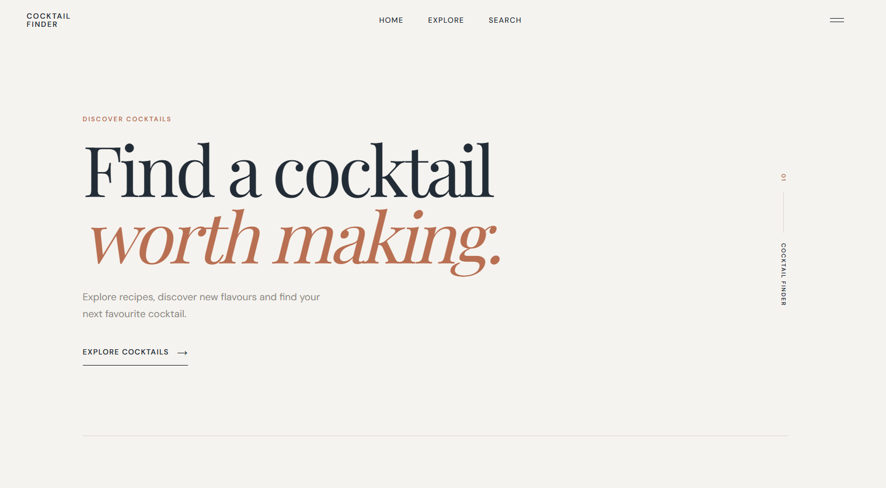
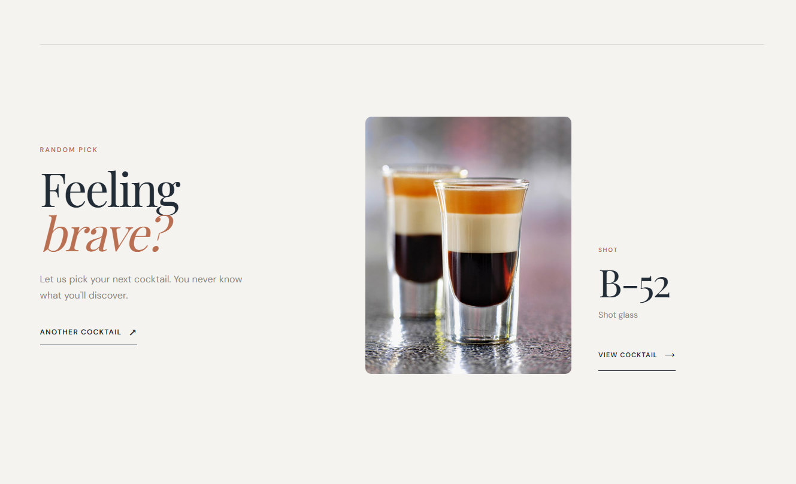
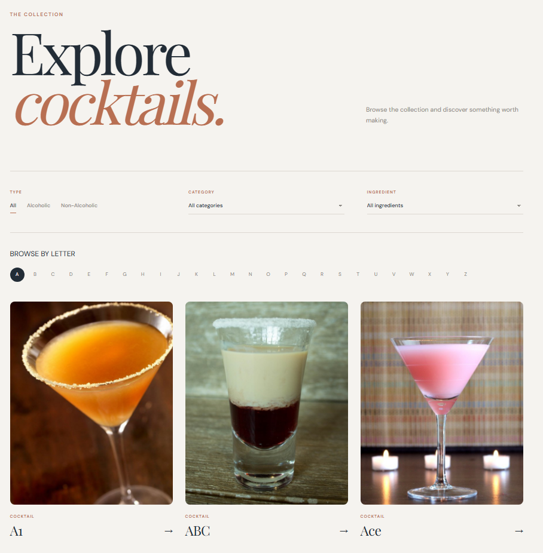
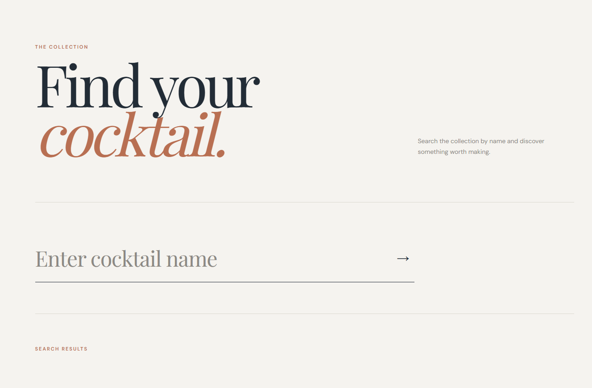
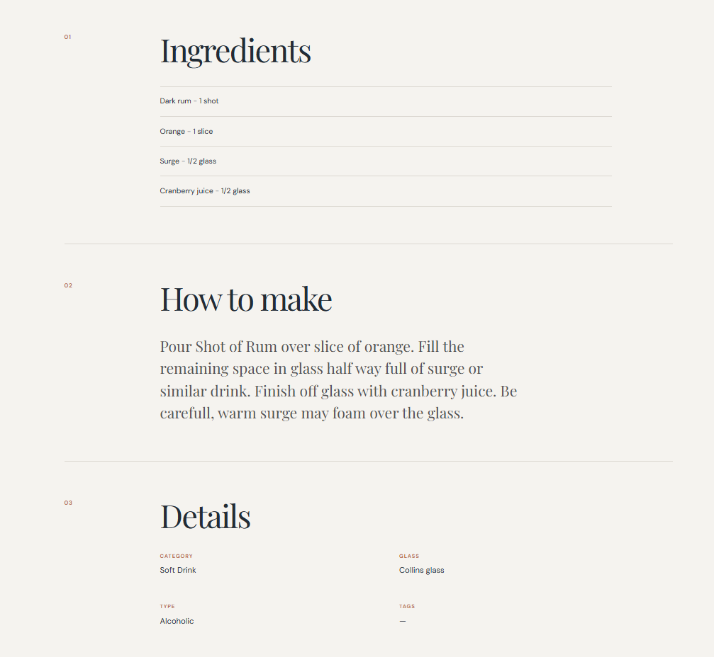
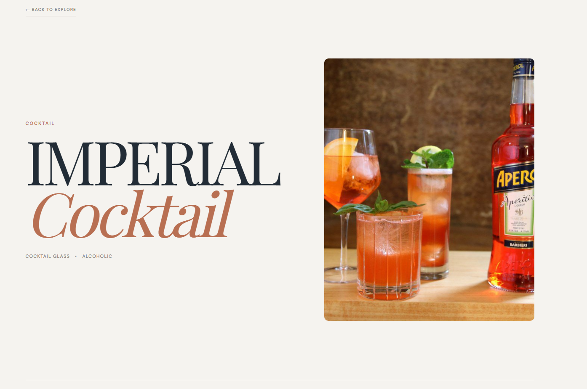

Cocktail search
Search for cocktails and quickly find drinks matching the user's search.
A cocktail discovery website built to search for drinks, explore recipes and discover new favourites.

Cocktail search and discovery interface.
Cocktail Finder is a web application created to make discovering cocktails simple and intuitive.
The website allows users to search through cocktails and explore recipes, ingredients and preparation instructions through a simple interface.
Search for cocktails and quickly find drinks matching the user's search.
Explore individual cocktails with information about ingredients and recipes.
Cocktail information is retrieved dynamically and displayed in the interface.
The application adapts to different screen sizes for a consistent experience.
The user searches for a cocktail using the search interface.
The application retrieves matching cocktail information.
Matching cocktails are displayed for the user to explore.
The selected cocktail reveals its ingredients and preparation.




